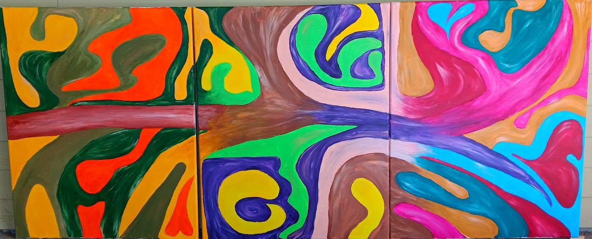

SunwardPainting on canvas, 2025A woman in profile lifts her arms toward a blazing sun, her patterned dress carrying the colors of the sky around her.
Mother ContinentPainting on canvas, 2025The map of Africa becomes a woman’s face, its outline filled with forests, flowers and living things.

ConfluenceTriptych, painting on canvas, 2025Three panels of flowing, interlocking shapes move from earthy oranges and greens through violet to vivid pinks and blues, joined by a single band that runs across all three.
Maame’s OraclePastel crayon, 2022Rings of color spiral outward from a glowing center, each layer drawn by hand.